Регулярная ежедневная продолжительная работа
KEX-3500
Универсальная высокопроизводительная мойка профессионального уровня для тех, кто ищет самое лучшее
Кабель 5 м и шланг высокого давления 10 м.
Позволяют заниматься уборкой на площади до 700 м² метров.
Регулярная ежедневная продолжительная работа

Удаление самых сложных загрязнений: производственных и технических масел

Очистка больших площадей: склады, парковки, придомовые участки
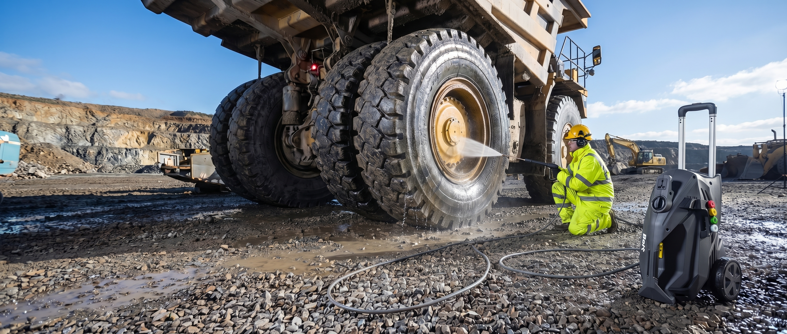
Мойка крупногабаритного авто и техники
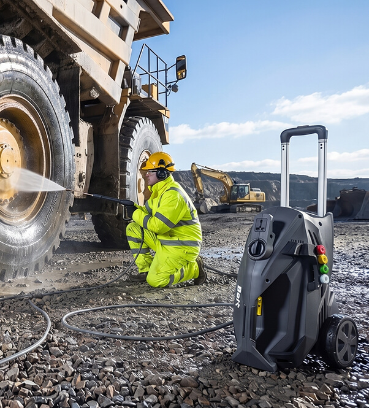
Профессиональный уровень устройства: отличительной особенностью модели является высокая мощность, большой объем прокачки воды и высокое рабочее давление, что обеспечивает эффективную работу в любых условиях и с любыми типами загрязнений.
Мощный и надежный индукционный двигатель с системой охлаждения и функцией автоотключения при перегреве, обладает увеличенным ресурсом работы, подходит для длительных работ
Экономит до 30% электроэнергии по сравнению с аналогичными мойками с такими же характеристиками, за счет асинхронного бесщеточного двигателя

Профессиональные аксессуары
Гораздо тише, чем бензиновая мойка или электрическая мойка с щеточным синхронным двигателем, схожих характеристик
Высокий класс защиты IPX5 от попадания влаги внутрь корпуса
Quick Fix (быстросъемное соединение). Шланг высокого давления, пистолет, насадки оснащены надежными быстросъемами
Максимальное давление на входе 1,2Мпа
Максимальная температура для воды 50°
Функция самовсасывания: воду можно забирать не только из водопровода, но и из любой емкости (ведра, бочки, бассейна). Это удобно, если нет доступа к центральному водоснабжению. Достаточно просто опустить шланг в емкость, и мойка самостоятельно начнет забор воды для работы.

Имеет запас прочности, превосходящий мощность насоса, с легкостью выдерживает пиковые нагрузки до 250 бар.
Эластичный шланг без эффекта памяти, выполнен из высококачественного армированного ПВХ. Материал имеет особую прочность и устойчив к деформации, изломам, разрывам и другим механическим повреждениям, имеет высокую устойчивость к любому механическому воздействию (рабочий диапазон от −20° до +60°).
Соединения шланга высокого давления выполнены из латуни — сплава, который выдерживает высокое давление, не ржавеет и не стирается с годами. Длина шланга в комплектации 10 м.
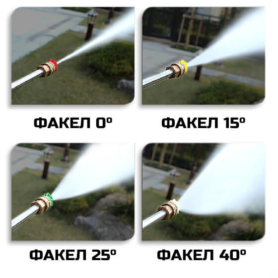
Факел 0°
Красная форсунка: струя воды с максимальным напором, предназначена для удаления самых сложных загрязнений.
Факел 15°
Жёлтая форсунка: веерообразная струя воды с сильным напором, подходящая для смывания трудноподдающейся очистке грязи.
Факел 25°
Зелёная форсунка: веерообразная струя воды подходит для очистки больших площадей.
Факел 40°
Серая форсунка: веерообразная струя воды подходит для смывания лёгких загрязнений или смывания автохимии.

Вода, поступающая в форсунку, движется турбулентно, то есть с завихрениями, и энергия потока частично тратится на неполезную работу. Благодаря установленному рассекателю общий поток разбивается на 4 упорядоченных струи воды, что приводит к ламинарному потоку, проходящему через корпус форсунки. Это снижает гидравлические потери, делает поток равномерным перед входом в сопло, обеспечивает стабильный факел распыла (струя не «рвётся», не «плюётся»), обеспечивает максимальную дальность струи и силу удара при наличии рассекателя.
Форсунка c рассекателем
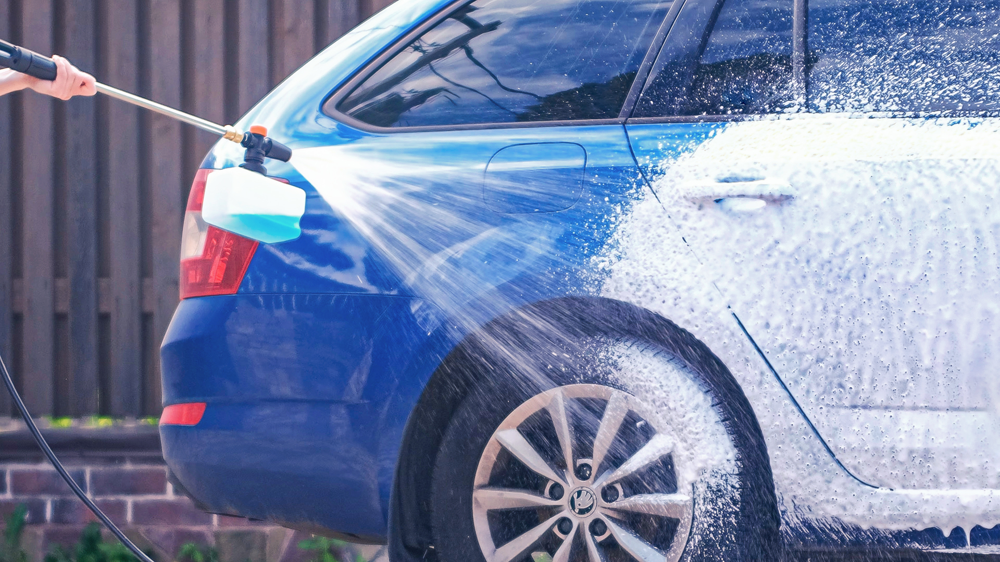
Форсунка без рассекателя

В комплекте идёт специальная грязевая фреза, она работает тонкой и очень мощной струёй воды по окружности с высокой частотой оборотов.
Такая насадка идеально подойдёт для очистки очень сильных загрязнений или способна снять тонкий верхний слой с деревянных поверхностей, обновляя их цвет от многолетней грязи, например садовая мебель, забор или веранда со ступенями.
Грязевая фреза подойдёт для борьбы с сорняками, которые прорастают между плиткой.

Заборный шланг
с QUICK FIX
Заборный шланг со встроенной системой QUICK FIX быстро и легко соединяется с фильтром.


Коннектор для шланга высокого давления
В комплекте идёт коннектор для шланга высокого давления, превращающий резьбовое соединение в QUICK FIX

Быстросъёмные соединения
Все аксессуары в комплекте (форсунки, грязевая фреза, пеногенератор) обладают быстросъёмными соединениями, чтобы легко и быстро менять их в процессе работы.
Пистолет помимо быстросъёмного соединения оборудован надёжной защитой от случайных нажатий.
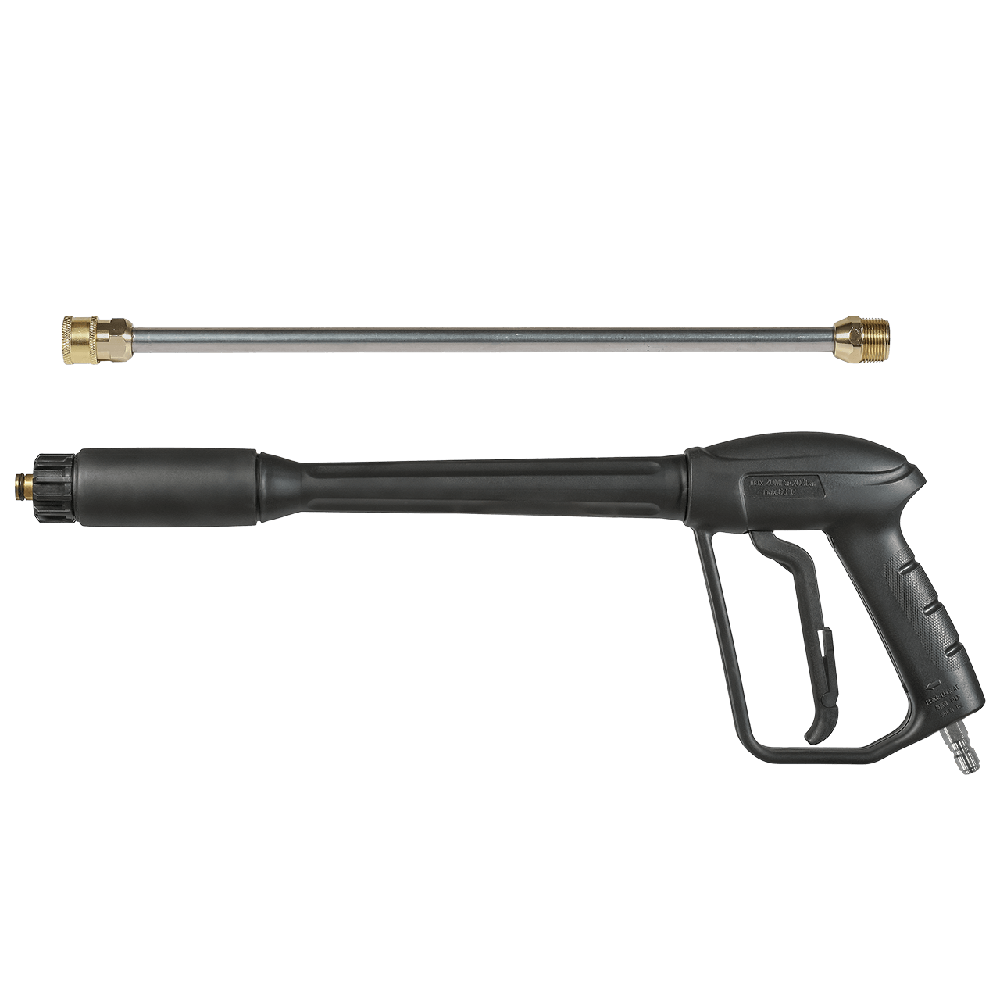
В комплекте с мойкой идёт пеногенератор с эффектом снежной пены. Достигается такой эффект благодаря встроенной сменной пенной таблетке и регулировки подачи моющего средства. Эффект снежной пены также зависит от моющего средства, которое вы используете и его концентрации.

Концентрированный сухой шампунь для деликатного ухода и удаления дорожной плёнки, масел и загрязнений лакокрасочного покрытия.

Бережёт воск: в отличие от агрессивной химии, наш шампунь мягко очищает, не разрушая защитный слой, что продлевает жизнь вашему полированному покрытию. Супер-экономия: одного пакетика хватит на обработку 250 м² поверхности или полноценную мойку 7 автомобилей. Контролируйте концентрацию: меняйте пропорции в зависимости от степени загрязнения: 5 литров воды для сильной грязи или 10 литров для лёгкого освежения. Содержимое 1 пакета сухого шампуня развести в 5–10 литрах воды.
Профессиональная мойка Bort KEX-3500 оснащена мощным индукционным мотором 3400 Вт с воздушным охлаждением, который обеспечивает производительность до 700 литров в час с возможностью самовсасывания воды из любого резервуара или источника. Индукционный мотор мойки Bort KEX 3500 экономит до 30% электроэнергии по сравнению с подобными щеточными моторами той же мощности, выдавая такое же давление и пропускную способность, но при этом в разы долговечнее и без потребности обслуживания. Мотор приводит в действие трёхосевой поршневой насос, плунжеры которого сделаны из закалённой нержавеющей стали. Всё вместе это позволяет добиться расхода воды до 700 литров в час и давления до 190 бар.

Мощная трёхплунжерная система
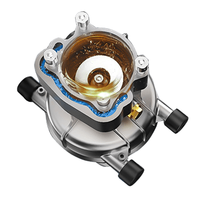
Металлическая помпа

Мощная система охлаждения индукционного мотора совмещена с водяным охлаждением помпы и работающих поршней в масляной ванне с косой шайбой
Прямая передача крутящего момента с индукционного двигателя на помпу. Резиновые демпферы на корпусе гасят вибрации работы мотора и плунжерной помпы.
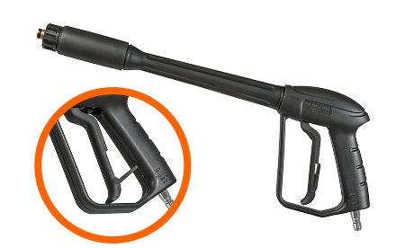
Защита от случайного нажатия на пистолете

Хранение форсунок на корпусе
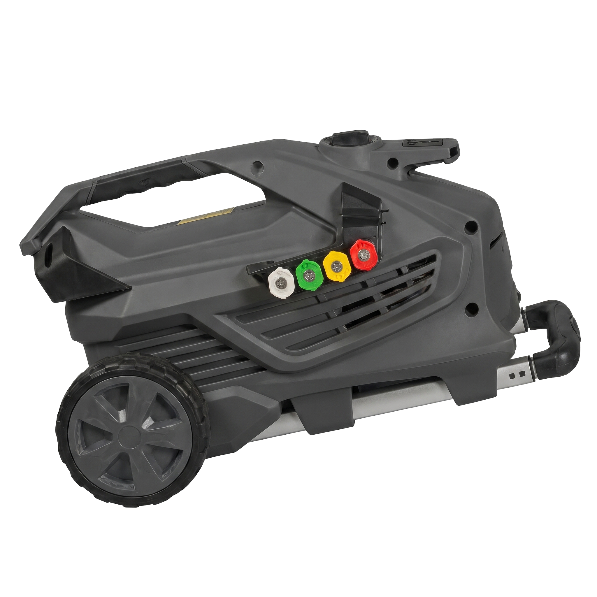
Горизонтальное и вертикальное положение эксплуатации

Большие колёса для удобного передвижения
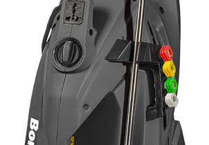
Телескопическая ручка
Пистолет с металлическим копьём
Скоба для смотанного шланга и ложемент для хранения пистолета и копья на корпусе мойки
Богатая комплектация позволяет выполнять большинство задач
и приступить к работе сразу после покупки.
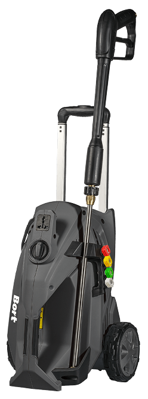
Мойка высокого давления KEX-3500 ×1

Пеногенератор с QUICK FIX (быстросъёмное соединение) ×1

Сменные форсунки с QUICK FIX, угол распыления 0°, 15°, 25°, 40° ×4
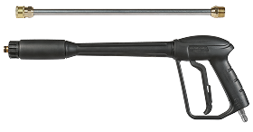
Пистолет-распылитель ×1

Коннектор M22×1,5 = 3/8 ×1

Грязевая фреза ×1

Шланг заборный ×1

Напорный шланг ×1

Шампунь сухой ×3

Игла для очистки сопла ×1

Фильтр ×2
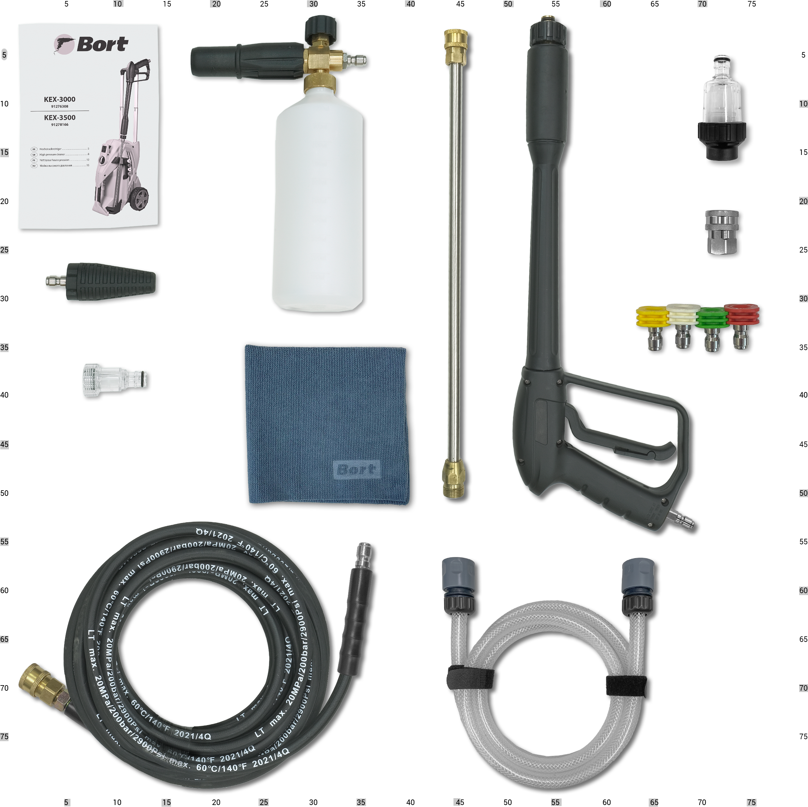
Салфетка из микрофибры ×1
Мойка высокого давления BORT KEX-3500 — это мощный инструмент для дома, дачи, автомобиля и профессионального использования. Модель создана для тех, кто хочет забыть о тряпках, щетках и ведрах. Благодаря уникальному сочетанию индукционного двигателя и профессиональных характеристик, таких как давление 190 бар и производительность 700 литров в час, эта мойка справляется с загрязнениями, которые раньше требовали часов ручного труда.
Мойка оснащена бесщеточным индукционным двигателем мощностью 3400 Вт: отсутствие угольных щеток исключает их износ и искрение, а также экономит до 30% электроэнергии по сравнению с аналогами. Это значит, что инструмент работает тише, дольше, не требует обслуживания и выдерживает интенсивные нагрузки. Вес 22,7 кг в сочетании с большими колёсами и складной рукояткой позволяет легко перемещать мойку по объекту, а 10-метровый армированный шланг обеспечивает свободу движений без частой перестановки аппарата.
Это надёжный помощник при мытье автомобилей, крупного транспорта и спецтехники. Она незаменима на автомойках и в сервисных центрах: очистка кузовов, двигателей, ходовой части и подкапотного пространства. На даче и загородном участке — очистка садовых дорожек, террас, заборов, фасадов домов, теплиц. На объектах промышленности и в клининге — мытьё оборудования, строительной и сельскохозяйственной техники, контейнеров, поддонов и производственных помещений. Мойка легко справляется с садовой мебелью, плиткой, коврами и даже очисткой техники после бетонных или грязевых работ. Благодаря функции самовсасывания вы можете забирать воду из любой ёмкости — бочки, ведра или бассейна, что особенно полезно на объектах без центрального водоснабжения.
Продуманная конструкция включает четыре сменные насадки для разных типов загрязнений: от деликатной веерной струи 40° до мощной точечной струи 0° для самых сложных пятен. В комплекте также идут пеногенератор для нанесения активной пены и грязевая фреза — насадка с вращающейся струёй, которая сбивает даже застарелую грязь в два счёта. Пистолет оснащён защитой от случайного нажатия, а функция автостопа отключает двигатель, когда вы отпускаете курок, экономя ресурс и электроэнергию.
BORT KEX-3500 — это надёжный помощник для тех, кто ценит своё время и деньги. Инструмент рассчитан как на интенсивное бытовое использование, так и на профессиональную эксплуатацию: для владельцев загородных домов, автолюбителей, автомоек, шиномонтажей, сервисных центров, клининговых компаний и предприятий, где требуется регулярная очистка техники и оборудования. Корпус насоса выполнен из силумина, а плунжеры — из закалённой нержавеющей стали, что гарантирует долговечность. Гарантия производителя составляет 2 года и может быть продлена до 5 лет при регистрации на официальном сайте. Выбирайте проверенное качество для чистоты вашего дома, автомобиля и профессиональных задач!